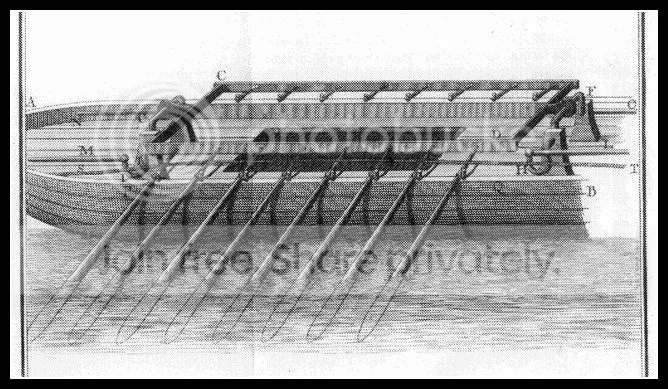

Корабли «длинные» и «круглые».
(Отступление терминологическое и не только)
Когда приходится обращаться за справкой к «Военно-морскому словарю» (Воениздат, 1990г.), всякий раз поражает присутствие чуть ли не в каждой словарной статье выражения «корабль (судно)». Именно так: «корабль», далее в скобках «судно». Это должно дать понять читателю, что речь в данном случае идет о вещах, относящихся как к кораблям (т.е. военным «водоходным средствам»), так и к судам, (т.е. «водоходным средстам», не являющимся военными), или, как пишет П.Е. Сорокин («Водные пути и судостроение на Северо-Западе Руси в средневековье». Изд. С.-Петербургского университета, 1997г.). «водоходным судам вообще». Я буду всегда использовать слова «корабль» и «судно» в качестве общеродовых понятий «водоходного средства». Говорю об этом, чтобы не заслужить упреков со стороны ревнителей чистоты морского языка.
Еще одно замечание хотелось бы сделать в предварительном плане. В отечественной литературе сложился подход к исторической классификации кораблей , предусматривающий деление их на классы гребных , парусных, паровых кораблей, т.е. по некоторой смешанной классификации: в случае гребных и парусных судов речь идет о типе движителя, в случае же паровых кораблей – в основу кладется тип двигателя. Классификация сама по себе вещь достаточно сложная и при правильном выборе критериев подразделения рассматриваемых объектов на классы может служить хорошей основой для их изучения. Для целей нашего исследования полезной может оказаться классификация, в основу которой положено разделение кораблей на классы не по их предназначению или вооружению, а распределение их по классам «длинных» и «круглых» судов. В работах русских авторов такой подход не очень популярен. Однако, на мой взгляд, он может оказаться весьма плодотворным.
Термин «длинный корабль» (лат. Navis longa, греч. ναῦς μαϰρά) широко использовался еще в античности, причем скорее для обозначения определенного класса кораблей, чем для отражения того факта, что данное судно имеет одно из главных размерений (длину) бóльшее, чем у других. [В этой связи краткое замечание. A.Jal в своем "Морском словаре" (1848г. с.941) достаточно остро, со свойственной ему иронией, критикует определение термина longa navis, которое дал Исидор Севильский в своей "Этимологии" (кн. XIX) : «Longæ naves dictæ, eo quod longiores sint cæteris.» Oн резонно замечает, что говоря о каком-либо объекте, что он длиннее или короче, необходимо указать, с чем его сравнивают. Таких указаний у Исидора, естественно, нет.]
Естественно, что для отнесения корабля к категории "длинных" должен был существовать какой-то критерий. Первоначально для морских перевозок в военных целях использовали купеческие суда, на которых вместо товаров помещались отряды воинов и их военное снаряжение. Размеры таких судов были различными, но характерным было отношение их длины к наибольшей ширине. По мнению J.Southworth'а (John van Duyn Southworth, The Ancient Fleets. The story of naval warfare under oars, 2600 B.C. – 1597 A.D. Twayne Publishers, Inc. New York, 1968 p.24), это отношение для "круглых судов" того времени составляло от 2,5 до 4, тогда как этот параметр для "длинных кораблей", появившихся в период греко-персидских войн (после 500 г. до н.э.), мог достигать 9.
Чтобы понять, какое место занимал «длинный корабль» среди других кораблей античности, кратко поясним существовавшие в то время классификации. Достаточно типичным было подразделение всех кораблей античного флота на Navis oneraria (στρογγύλη ναῦς, πλοῖον φορτιϰόν), или парусные грузовые суда, Navis actuaria (ἐπίϰωπος), или легкие гребные корабли, имеющие также парусное вооружение, Navis longa (ναῦς μαϰρά), или военные галеры, как их стали называть в средние века.
Существовала и другая классификация. Корабли делили на Navis tecta, strata или constrata (ναῦς ϰαταφράϰτη), или палубные корабли, Navis aperta (ᾶφραϰτον), или беспалубные корабли и корабли с частичной палубой, и, наконец, Navis turrita, или военные палубные корабли с надстройкой в форме башни, на которой размещались вооруженные воины.
Косвенным подтверждением того, что термин «длинные корабли» обозначал класс военных кораблей того времени, а не положение его на шкале основных размерений, служит перевод этого термина у Дворецкого («Латинско-русский словарь, 2-е изд., 1976 г., с. 664) “ navis longa - военный корабль”.
Итак, военные галеры естественно относятся к классу “длинных кораблей». Почему приходится настаивать на значении такой классификации? Просто по той причине, что исчезновение галер из корабельного состава флотов основных военно-морских держав в XVIII-XIX вв. не означало исчезновения класса «длинных кораблей». Преемником галер стали проекты судов, на которых использовался тот же движитель, что и у галер, т.е. весла, однако в движение они приводились не мускульной силой гребцов, а другим источником энергии. Это были предтечи первых паровых судов, которые подготовили почву для создания колесных, а затем и винтовых пароходов. Этот этап в истории галер будет, естественно, более подробно затронут в дальнейшем, а сейча я хочу привести лишь один пример. Он взят из 6-го тома французского трактата «Machines approuvées par l’Academie Royale des Sciences» («Механизмы, одобренные Королевской Академией наук») (Paris, 1735), одобрен Академией в 1733 г. и имеет заголовок «MACHINE POUR FAIRE MOUVOIR LES RAMES D'UNE GALERE, INVENTEE PAR M. LIMOUSIN.» (Механизм для приведения в движение весел галеры, изобретенный Лимузеном). Я привожу только иллюстрацию к этому патенту, текст можно найти в указанном трактате.
